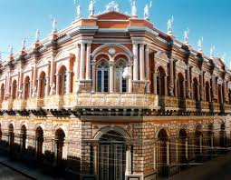

Bienvenido a Tarija
Tarija es una hermosa ciudad al sur de Bolivia, conocida por su clima agradable, su cultura vitivinícola y su gente hospitalaria.
Ubicación
Tarija se encuentra en el sur de Bolivia, a unos 600 km de la ciudad de La Paz. Limita al norte con Chuquisaca, al este con Paraguay, al sur con Argentina y al oeste con Potosí.
Lugares turísticos de Tarija
Vista panorámica de la Casa dorada.
Castillo azul, una de las principales atracciones de Tarija.
Comidas típicas de Tarija

El saice es un plato típico de Tarija, preparado con carne de res, arroz, papas y especias.
El vino es una de las bebidas más populares de Tarija.
Los rosquetes son un postre tradicional de Tarija, preparados con harina, azúcar y grasa.
Música Tradicional de Tarija
Escucha una muestra de la música chapaca, tradicional de la región.
Video sobre Tarija
Descubre más sobre la belleza y cultura de Tarija en este video.